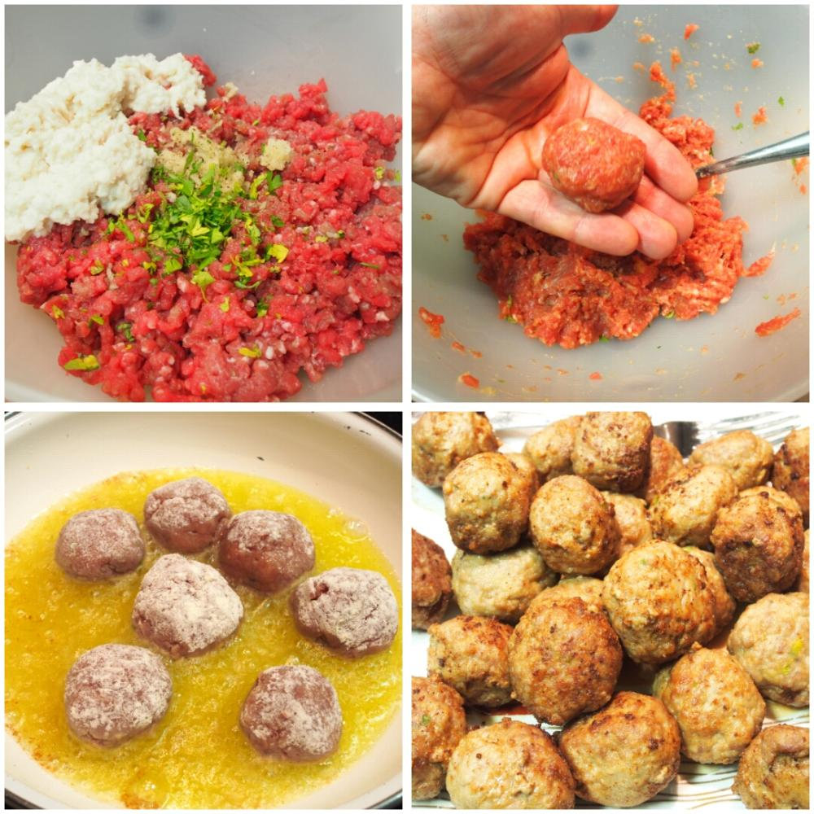
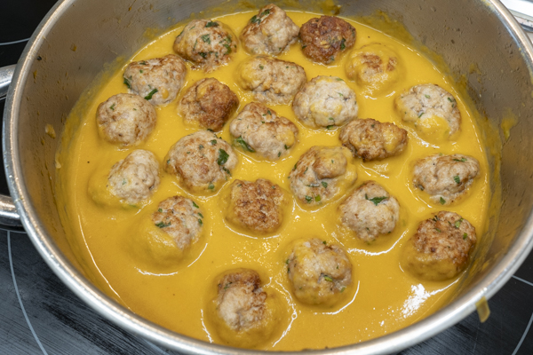

Veámos como hacerlo paso a paso

Albóndigas en Salsa
Paso 1: Ingredientes
- 500g de carne picada (mitad cerdo, mitad ternera)
- 1 huevo
- Pan rallado
- 1 diente de ajo picado
- Perejil fresco
- 1 cebolla grande
- 200ml de caldo de carne
- 1 cucharada de harina

Paso 2: Preparación
Mezclamos la carne con el ajo, el perejil, el huevo y el pan rallado. Formamos bolitas y las doramos en una sartén con aceite caliente.

Paso 3: Cocción
En la misma sartén, sofreímos la cebolla picada, añadimos la harina y el caldo. Incorporamos las albóndigas y dejamos cocinar a fuego bajo durante 20 minutos.